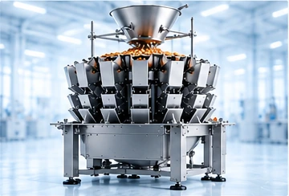
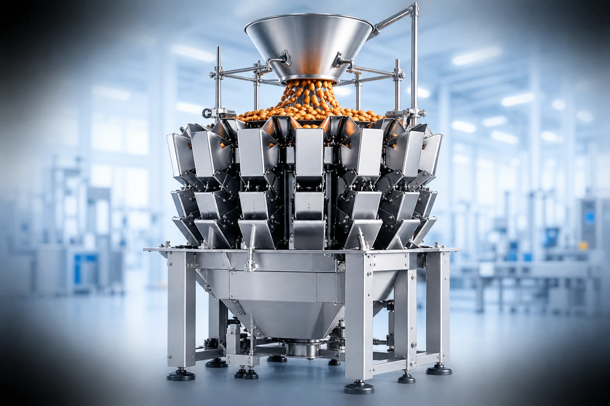
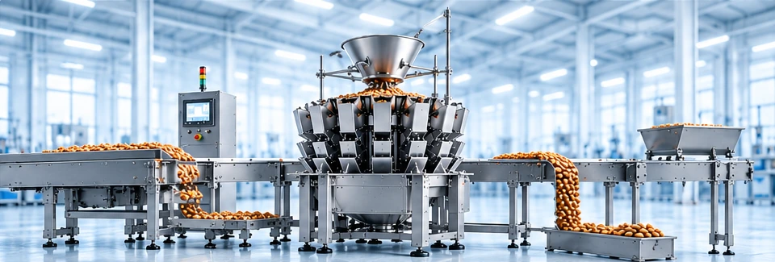
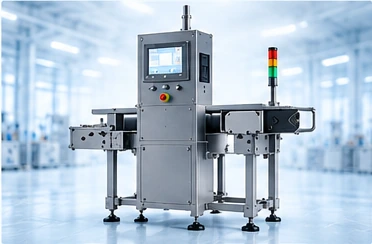
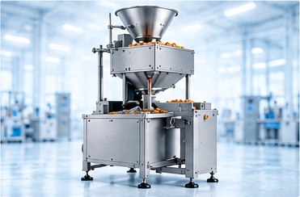
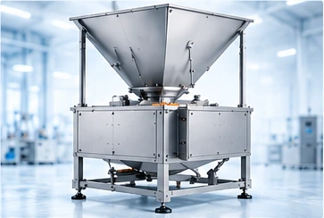
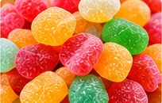
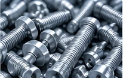
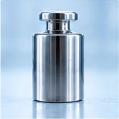

Waga wielogłowicowa
Najlepsza do produktów sypkich, kawałkowych lub o nieregularnym kształcie — chipsy, mrożone warzywa, kawałki mięsa, orzechy. Wysoka wydajność i powtarzalność przy dużych wolumenach.
Dowiedz się więcejAutomatyczne naważanie i dozowanie
Naważanie to proces odmierzania określonej ilości produktu — wagowo lub sztukowo — przed jego zapakowaniem. W praktyce oznacza to, że każde opakowanie na końcu linii produkcyjnej zawiera dokładnie tyle produktu, ile deklaruje etykieta, bez ręcznego ważenia każdej porcji.

Proces naważania
Waga to tylko jeden element linii — cały proces obejmuje podanie produktu, ważenie, rozdział na kanały pakujące i higienę. Platformy, systemy podające, dystrybucyjne i myjące muszą być dobrane indywidualnie do konkretnego produktu i formatu opakowania.
Poznaj rodzaje wag
Nie każdy produkt i nie każda linia potrzebują tego samego rozwiązania.

Najlepsza do produktów sypkich, kawałkowych lub o nieregularnym kształcie — chipsy, mrożone warzywa, kawałki mięsa, orzechy. Wysoka wydajność i powtarzalność przy dużych wolumenach.
Dowiedz się więcej
Umieszczona w linii, kontroluje wagę już zapakowanego produktu w locie — eliminuje opakowania poza tolerancją zanim trafią do dystrybucji. Często łączona z wykrywaczem metalu.
Dowiedz się więcej
Rozwiązanie dla mniejszych linii i niższych wolumenów — operator wspomaga proces, a waga pilnuje precyzji. Niższy koszt wejścia niż pełna automatyzacja.
Dowiedz się więcej
Do dużych opakowań i big-bagów, gdzie liczy się przepustowość masy, a nie pojedyncza porcja konsumencka.
Dowiedz się więcejKrótkie zestawienie: typ wagi → typowy produkt → typowa skala produkcji.
| Typ wagi | Typowy produkt | Typowa skala produkcji |
|---|---|---|
| Waga wielogłowicowa | Chipsy, orzechy, mrożone warzywa, kawałki mięsa | Duże wolumeny, wysoka prędkość linii |
| Waga kontrolna (checkweigher) | Gotowe opakowania dowolnego produktu | Kontrola jakości na każdej linii pakującej |
| Waga półautomatyczna | Produkty specjalistyczne, małe serie | Małe i średnie linie, niższe wolumeny |
| Dozownik objętościowy (bulk weigher) | Produkty sypkie do big-bagów i worków przemysłowych | Wysoka przepustowość masy, opakowania zbiorcze |
Od pieczywa po chemię przemysłową — zasada jest ta sama, wyzwania różnią się produktem. Produkty lepkie, kruche lub o nieregularnym kształcie wymagają innego doboru głowic i prędkości pracy niż produkty jednorodne.
Zapytaj o dobór do branży

Automatyzacja procesu ważenia to nie tylko szybkość — to mierzalny wpływ na koszty, jakość i zgodność z przepisami.
Precyzyjne dozowanie ogranicza nadwagę w każdym opakowaniu — nawet niewielkie zmniejszenie średniej nadwagi przekłada się na realną oszczędność surowca.
Systemy sygnalizacyjne informują o nieprawidłowościach w czasie rzeczywistym — zanim doprowadzą do dłuższego zatrzymania linii.
Nowoczesne systemy rejestrują dane o każdej porcji — ułatwia to kontrolę jakości i wykazanie zgodności z wymaganiami dotyczącymi ilości nominalnych.
Kompleksowe podejście do całej linii upraszcza planowanie, ogranicza liczbę punktów styku i ułatwia harmonogramowanie wdrożenia.
Jeden dobrze skonfigurowany system obsługuje różne formaty opakowań i receptury — ważne przy sezonowych zmianach asortymentu.
Compliance i serwis
Zakup wagi to początek — dalej trzeba utrzymać jej dokładność zgodnie z przepisami. Wagi używane w obrocie handlowym podlegają w Polsce obowiązkowej legalizacji zgodnie z przepisami metrologicznymi.
Dowiedz się więcej
Legalizacja potwierdza, że waga spełnia wymagania dokładności określone prawem dla obrotu handlowego.
Regularne wzorcowanie i przeglądy techniczne pozwalają wychwycić odchylenia dokładności, zanim wpłyną na jakość produkcji.
Zdalna diagnostyka i umowa serwisowa skracają czas przestoju — regularne przeglądy wychodzą taniej niż awaryjne naprawy.
Najczęściej zadawane pytania
Nie ma jednego uniwersalnego rozwiązania — dobór wagi zależy od cech produktu (np. czy jest lepki, kruchy, mrożony), rodzaju opakowania, wymaganej wydajności oraz warunków produkcji. Dlatego większość wag wielogłowicowych jest indywidualnie dopasowywana do konkretnego zastosowania.
Waga wielogłowicowa odmierza i dozuje produkt przed zapakowaniem. Waga kontrolna sprawdza już gotowe opakowanie w locie i eliminuje te, które wypadają poza tolerancję wagową. W praktyce oba rozwiązania często działają razem w tej samej linii.
Nowoczesne systemy można spiąć w sieć i monitorować zdalnie, co pozwala szybciej zdiagnozować usterkę. Regularna umowa serwisowa pozwala też z góry zaplanować koszty utrzymania i terminy przeglądów.
Tak — konsultacje przedsprzedażowe zwykle obejmują szczegółową analizę konkretnego produktu i jego wymagań, często wraz z testami, zanim padnie decyzja o zakupie konkretnego modelu.
Tak, o ile system został odpowiednio zaprojektowany — może obsłużyć różne receptury i formaty opakowań, co ma znaczenie przy sezonowych zmianach asortymentu.
Zależy od złożoności projektu, ale cały proces — od pierwszej rozmowy, przez planowanie i dobór komponentów, po uruchomienie — zwykle prowadzi jedna osoba koordynująca po stronie dostawcy.
Skontaktuj się z nami
SPOLEX dostarcza kompletne rozwiązania dla linii pakujących — od naważania i dozowania, przez owijanie i etykietowanie, po pakowanie zbiorcze.